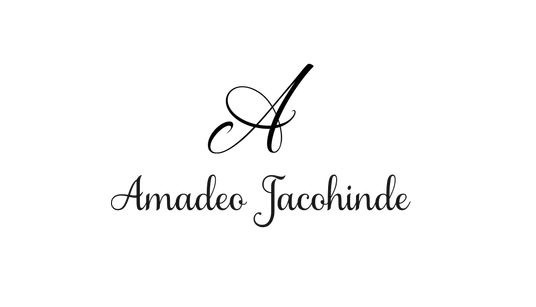

Los Escritos de

Guerra civil mexicana
Un conflicto armado que conmueve la conciencia mundial de una época, una profunda crisis y el derrumbe definitivo de una antigua ingenuidad de los humanos que buscaban la felicidad.
Y vemos diluirse la estructura de un cuento en el flujo delicado de una psicología explosiva...
La Gran Fogata
Crear un mito científico sobre el oscuro descubrimiento del fuego. Esa fue siempre la idea. Exploramos un mundo espontáneo y extinto, un mundo que vio nacer la inteligencia y los ejércitos de los humanos.
El primero de sus micro-relatos neolíticos: cuentos de la vida nómada y el mundo mágico de los ancestros más antiguos.
El Portavoz
El mundo criminal adopta un elemento que el mundo no esperaba: un intermediario con la sociedad civil. Lejos de detenerlo, el planeta sigue la pauta de su camino. Una voz que al fin puede representar a los criminales ante el mundo entero.
No sé si esto sea una ficción política-social o una alegoría del Arte contemporáneo. A veces solo escribo.
Arcas Espaciales
Hoy suena futurista, pero acaso las sociedades humanas están destinadas a expandirse en las estrellas y las galaxias. Un ciclo que seguro tomará mucho tiempo pero iniciará en algo parecido a las Arcas Espaciales.
En la historia de la Era Espacial, por así decirlo, el autor trata de describir algo parecido al primer momento, el preludio general...